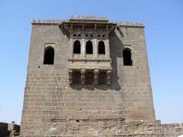
SHIVNERI
- THE PLACE WHERE SHIVAJI MAHARAJ WAS BORN
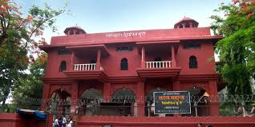
LAL MAHAL
- THE PLACE WHERE SHIVAJI MAHARAJ SPENT HIS CHILDHOOD
- THE STRIKE ON SHAISTA KHAN TOOK PLACE HERE
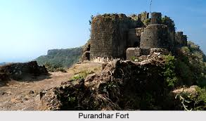
PURANDHAR FORT
- TREATY OF PURANDHAR TOOK PLACE HERE
- BIRTHPLACE OF SAMBHAJI MAHARAJ
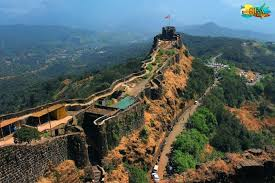
PRATAPGARH FORT
- THE PLACE WHERE SHIVAJI MAHARAJ AND AFZAL KHAN MEET TAKE PLACE
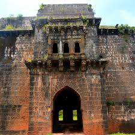
PANHALA FORT
- THE PLACE WHERE SHIVAJI MAHARAJ WAS TRAPPED BY SEIGE OF SIDDI JAHAUHAR
- THE BATTLE OF PAWANKHIND IS AFTERMATH FROM THIS ESCAPE
- RECAPUTED BY KONDAJI WHICH IS SAID TO BE TAKEN BACK WITH THE HELP OF ONLY 60 SOLIDIERS
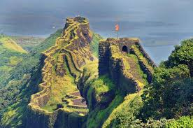
RAJGARH FORTI
- THE FIRST CAPITAL OF MARATHA EMPIRE
- RAJARAM MAHARAJ WAS BORN IN THIS FORT

SINDHUDURG
- ONE OF THE TWO ISLAND FORTS APART FROM JANJIRA
- ACT AS STRONGHOLD FOR MARATHA NAVY
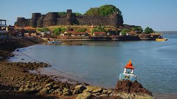
VIJAYDURG FORT
- ONE OF THE FEW FORTS WHERE FLAG WAS HOISTED BY SHIVAJI MAHARAJ
- THE BIRTHPLACE OF MARATHA NAVY
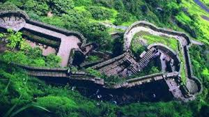
SINHAGADH FORT
- ONE OF THE FORTS WHICH CAME UNDER MUGHAL AFTER PURANDAR TREATY
- EARLIER KONDHANA RENAMED TO SINHAGADH AFTER THE VALOUR SHOWN BY TANHAJI (CHILDHOOD FRIEND) TO CAPTURE THIS FORT
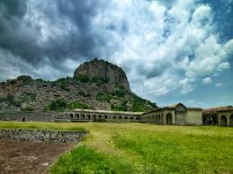
GINGEE FORT
- ONE OF THE FORTS WHICH CAPTURED DURING DAKSHIN DIGVIJAYABHIYAN
- LATTER SERVED AS MARATHA CAPITAL AFTER CAPTURE OF RAIGRAH IN 1690 SHOWING THE FAR VISION OF SHIVAJI MAHARAJ
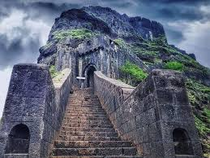
LOHAGARH FORT
- ONE OF THE FORTS WHICH CAME UNDER MUGHAL AFTER PURANDAR TREATY
- ACTED AS A PLACE WHICH STORED TREASURES ESPECIALLY FROM SURAT CAMPAIGNS
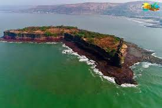
SUVRNADURG
- The fort was captured by Chatrapati Shivaji Maharaj in defeating Ali Adil Shah II.
- "Samudratla Shivaji" knwon as KANHOJI ANGRE was the Admiral of the Maratha Navy, his fleet was stationed here
SINHAGADH FORT
- ONE OF THE FORTS WHICH CAME UNDER MUGHAL AFTER PURANDAR TREATY
- EARLIER KONDHANA RENAMED TO SINHAGADH AFTER THE VALOUR SHOWN BY TANHAJI (CHILDHOOD FRIEND) TO CAPTURE THIS FORT
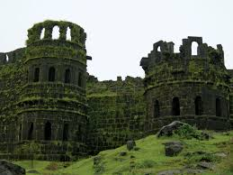
RAIGADH FORT
- THE PLACE WHICH BECOME MARATHA EPICENTRE AFTER CAPITAL SHIFT FROM RAJGADH
- CORONATION ALSO TAKEN PLACE HERE
- ALSO SAMADHI OF SHIVAJI MAHARAJ AND HIS MOTHER JIJAMATA IS THERE